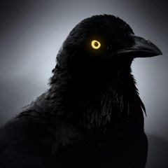

Casos do Corvo
Casos reais que ninguém explicou.
O Casos do Corvo é um canal de vídeos curtos sobre mistérios reais, desaparecimentos, lugares amaldiçoados e os capítulos mais sombrios da história.
Vídeo novo todo dia em:
Os vídeos são publicados por uma ferramenta própria do canal ("Robo Casos do Corvo"), que usa a API do YouTube apenas para enviar os vídeos do próprio canal.
Contato: casosdocorvo@gmail.com